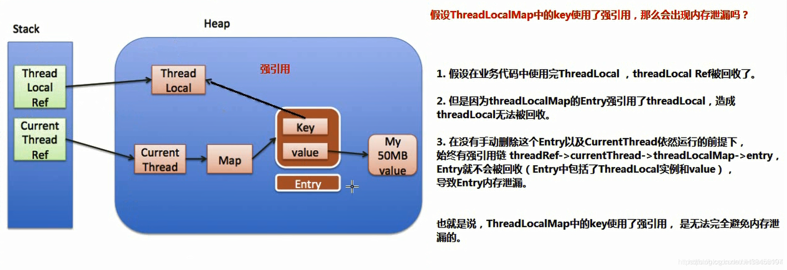
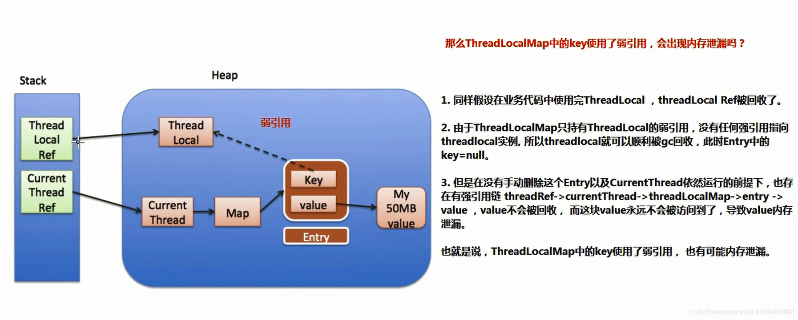
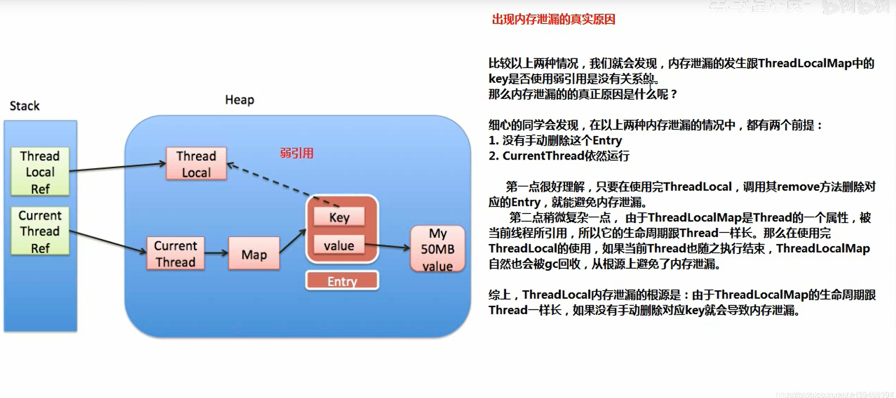

1.内存泄漏
内存溢出: Memory overflow 没有足够的内存提供申请者使用.
内存泄漏: Memory Leak 程序中已经动态分配的堆内存由于某种原因, 程序未释放或者无法释放, 造成系统内部的浪费, 导致程序运行速度减缓甚至系统崩溃等严重结果. 内存泄漏的堆积终将导致内存溢出
2. key–>ThreadLocal是强引用
假设ThreadLocalMap中的key使用了强引用, 那么会出现内存泄漏吗?

- 假设在业务代码中使用完ThreadLocal, ThreadLocal ref被回收了
- 但是因为threadLocalMap的Entry强引用了threadLocal(key就是threadLocal), 造成ThreadLocal无法被回收
- 在没有手动删除Entry以及CurrentThread(当前线程)依然运行的前提下, 始终有
强引用链CurrentThread Ref → CurrentThread →Map(ThreadLocalMap)-> entry, Entry就不会被回收( Entry中包括了ThreadLocal实例和value), 导致Entry内存泄漏
也就是说: ThreadLocalMap中的key使用了强引用, 是无法完全避免内存泄漏的
3. key–>ThreadLocal是弱引用
假设ThreadLocalMap中的key使用了弱引用, 那么会出现内存泄漏吗?

- 假设在业务代码中使用完ThreadLocal, ThreadLocal ref被回收了
- 由于threadLocalMap只持有ThreadLocal的弱引用, 没有任何强引用指向threadlocal实例（这里Entry不再强引用ThreadLocal了）, 所以threadlocal就可以顺利被gc回收, 此时Entry中的key = null
- 在没有手动删除Entry以及CurrentThread依然运行的前提下, 也存在始终有
强引用链CurrentThread Ref → CurrentThread →Map(ThreadLocalMap)-> entry,value就不会被回收, 而这块value永远不会被访问到了（因为key=null）, 导致value内存泄漏
也就是说: ThreadLocalMap中的key使用了弱引用, 也有可能内存泄漏
4. 内存泄漏的真实原因

比较以上两种情况,我们就会发现:
内存泄漏的发生跟 ThreadLocalIMap 中的 key 是否使用弱引用是没有关系的。那么内存泄漏的的真正原因是什么呢？
细心的同学会发现，在以上两种内存泄漏的情况中．都有两个前提：主要两个原因
1 . 没有手动侧除这个 Entry
2 . CurrentThread 当前线程依然运行
- 第一点很好理解，只要在使用完下 ThreadLocal ，调用其 remove 方法删除对应的 Entry ，就能避免内存泄漏。
- 第二点稍微复杂一点，由于ThreadLocalMap 是 Thread 的一个属性，被当前线程所引用，所以ThreadLocalMap的生命周期跟 Thread 一样长。那么在使用完 ThreadLocal 的使用，如果当前Thread 也随之执行结束， ThreadLocalMap 自然也会被 gc 回收，从根源上避免了内存泄漏。
综上， ThreadLocal 内存泄漏的根源是：
由于ThreadLocalMap 的生命周期跟 Thread 一样长，如果没有手动删除（remove()方法）对应 key 就会导致内存泄漏．
5. key要使用弱引用
**为什么使用弱引用**，根据刚才的分析，我们知道了：
无论 ThreadLocalMap 中的 key 使用哪种类型引用都无法完全避免内存泄漏，跟使用弱引用没有关系。
要避免内存泄漏有两种方式：
- 1 ．使用完 ThreadLocal ，调用其 remove 方法删除对应的 Entry
- 2 ．使用完 ThreadLocal ，当前 Thread 也随之运行结束
相对第一种方式，第二种方式显然更不好控制，特别是使用线程池的时候，线程结束是不会销毁的．
也就是说，只要记得在使用完ThreadLocal 及时的调用 remove ，无论 key 是强引用还是弱引用都不会有问题.
那么为什么 key 要用弱引用呢
事实上，在 ThreadLocalMap 中的set/getEntry 方法中，会对 key 为 null（也即是 ThreadLocal 为 null ）进行判断，如果为 null 的话，那么会把 value 置为 null 的．
这就意味着使用完 ThreadLocal , CurrentThread 依然运行的前提下．就算忘记调用 remove 方法，弱引用比强引用可以多一层保障：弱引用的 ThreadLocal 会被回收．对应value在下一次 ThreadLocaIMap 调用 set/get/remove 中的任一方法的时候会被清除，从而避免内存泄漏．